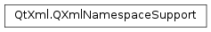

QXmlNamespaceSupport¶
Synopsis¶
Functions¶
- def
popContext() - def
prefix(arg__1) - def
prefixes() - def
prefixes(arg__1) - def
processName(arg__1, arg__2, arg__3, arg__4) - def
pushContext() - def
reset() - def
setPrefix(arg__1, arg__2) - def
splitName(arg__1, arg__2, arg__3) - def
uri(arg__1)
Detailed Description¶
The
PySide2.QtXml.QXmlNamespaceSupportclass is a helper class for XML readers which want to include namespace support.You can set the prefix for the current namespace with
PySide2.QtXml.QXmlNamespaceSupport.setPrefix(), and get the list of current prefixes (or those for a given URI) withPySide2.QtXml.QXmlNamespaceSupport.prefixes(). The namespace URI is available fromPySide2.QtXml.QXmlNamespaceSupport.uri(). UsePySide2.QtXml.QXmlNamespaceSupport.pushContext()to start a new namespace context, andPySide2.QtXml.QXmlNamespaceSupport.popContext()to return to the previous namespace context. UsePySide2.QtXml.QXmlNamespaceSupport.splitName()orPySide2.QtXml.QXmlNamespaceSupport.processName()to split a name into its prefix and local name.See also
-
class
PySide2.QtXml.QXmlNamespaceSupport¶ Constructs a
PySide2.QtXml.QXmlNamespaceSupport.
-
PySide2.QtXml.QXmlNamespaceSupport.popContext()¶ Reverts to the previous namespace context.
Normally, you should pop the context at the end of each XML element. After popping the context, all namespace prefix mappings that were previously in force are restored.
-
PySide2.QtXml.QXmlNamespaceSupport.prefix(arg__1)¶ Parameters: arg__1 – unicode Return type: unicode Returns one of the prefixes mapped to the namespace URI
uri.If more than one prefix is currently mapped to the same URI, this function makes an arbitrary selection; if you want all of the prefixes, use
PySide2.QtXml.QXmlNamespaceSupport.prefixes()instead.Note: to check for a default prefix, use the
PySide2.QtXml.QXmlNamespaceSupport.uri()function with an argument of “”.
-
PySide2.QtXml.QXmlNamespaceSupport.prefixes(arg__1)¶ Parameters: arg__1 – unicode Return type: list of strings This is an overloaded function.
Returns a list of all prefixes currently declared for the namespace URI
uri.The “xml:” prefix is included. If you only want one prefix that is mapped to the namespace URI, and you don’t care which one you get, use the
PySide2.QtXml.QXmlNamespaceSupport.prefix()function instead.Note: The empty (default) prefix is never included in this list; to check for the presence of a default namespace, call
PySide2.QtXml.QXmlNamespaceSupport.uri()with “” as the argument.
-
PySide2.QtXml.QXmlNamespaceSupport.prefixes() Return type: list of strings Returns a list of all the prefixes currently declared.
If there is a default prefix, this function does not return it in the list; check for the default prefix using
PySide2.QtXml.QXmlNamespaceSupport.uri()with an argument of “”.
-
PySide2.QtXml.QXmlNamespaceSupport.processName(arg__1, arg__2, arg__3, arg__4)¶ Parameters: - arg__1 – unicode
- arg__2 –
PySide2.QtCore.bool - arg__3 – unicode
- arg__4 – unicode
Processes a raw XML 1.0 name in the current context by removing the prefix and looking it up among the prefixes currently declared.
qnameis the raw XML 1.0 name to be processed.isAttributeis true if the name is an attribute name.This function stores the namespace URI in
nsuri(which will be set to an empty string if the raw name has an undeclared prefix), and stores the local name (without prefix) inlocalname(which will be set to an empty string if no namespace is in use).Note that attribute names are processed differently than element names: an unprefixed element name gets the default namespace (if any), while an unprefixed attribute name does not.
-
PySide2.QtXml.QXmlNamespaceSupport.pushContext()¶ Starts a new namespace context.
Normally, you should push a new context at the beginning of each XML element: the new context automatically inherits the declarations of its parent context, and it also keeps track of which declarations were made within this context.
-
PySide2.QtXml.QXmlNamespaceSupport.reset()¶ Resets this namespace support object ready for reuse.
-
PySide2.QtXml.QXmlNamespaceSupport.setPrefix(arg__1, arg__2)¶ Parameters: - arg__1 – unicode
- arg__2 – unicode
This function declares a prefix
prein the current namespace context to be the namespace URIuri. The prefix remains in force until this context is popped, unless it is shadowed in a descendant context.Note that there is an asymmetry in this library.
PySide2.QtXml.QXmlNamespaceSupport.prefix()does not return the default “” prefix, even if you have declared one; to check for a default prefix, you must look it up explicitly usingPySide2.QtXml.QXmlNamespaceSupport.uri(). This asymmetry exists to make it easier to look up prefixes for attribute names, where the default prefix is not allowed.
-
PySide2.QtXml.QXmlNamespaceSupport.splitName(arg__1, arg__2, arg__3)¶ Parameters: - arg__1 – unicode
- arg__2 – unicode
- arg__3 – unicode
Splits the name
qnameat the ‘:’ and returns the prefix inprefixand the local name inlocalname.
-
PySide2.QtXml.QXmlNamespaceSupport.uri(arg__1)¶ Parameters: arg__1 – unicode Return type: unicode Looks up the prefix
prefixin the current context and returns the currently-mapped namespace URI. Use the empty string (“”) for the default namespace.
© 2018 The Qt Company Ltd. Documentation contributions included herein are the copyrights of their respective owners. The documentation provided herein is licensed under the terms of the GNU Free Documentation License version 1.3 as published by the Free Software Foundation. Qt and respective logos are trademarks of The Qt Company Ltd. in Finland and/or other countries worldwide. All other trademarks are property of their respective owners.